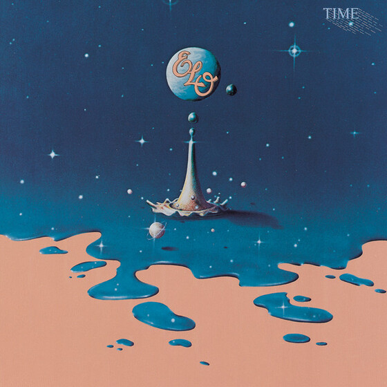
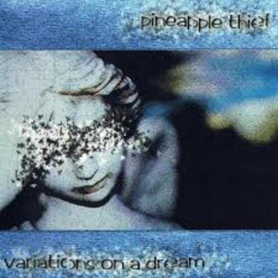
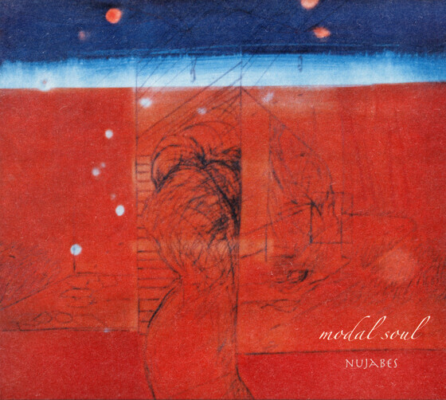
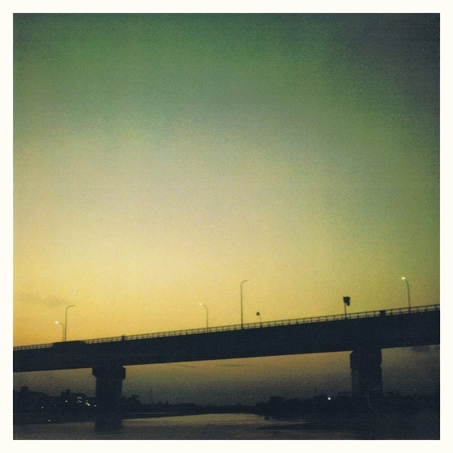

1981 | ELO | Orchestral rock

| # | Track | Duración |
| 1 | Prologue | 1:16 |
| 2 | Twilight | 3:42 |
| 3 | Yours Truly, 2095 | 3:11 |
| 4 | Ticket to the Moon | 4:07 |
| 5 | The Way Life's Meant to Be | 4:38 |
| 6 | Another Heart Breaks | 3:48 |
| 7 | Rain Is Falling | 3:55 |
| 8 | From the End of the World | 3:16 |
| 9 | The Lights Go Down | 3:33 |
| 10 | Here Is the News | 3:50 |
| 11 | 21st Century Man | 4:03 |
| 12 | Hold On Tight | 3:06 |
| 13 | Epilogue | 1:31 |
2004 | Pineapple Thief | Progressive rock

| # | Track | Duración |
| 1 | We Subside | 4:58 |
| 2 | This Will Remain Unspoken | 3:27 |
| 3 | Vapour Trails | 8:31 |
| 4 | Run Me Through | 4:41 |
| 5 | The Bitter Pill | 4:36 |
| 6 | Resident Alien | 4:14 |
| 7 | Sooner or Later | 4:16 |
| 8 | Part Zero | 7:26 |
| 9 | Keep Dreaming | 4:26 |
| 10 | Remember Us | 16:18 |
2005 | Nujabes | Jazz hop / Hip hop japonés

| # | Track | Duración |
| 1 | Feather (feat. Cise Starr & Akin) | 2:55 |
| 2 | Ordinary Joe (feat. Terry Callier) | 5:07 |
| 3 | Reflection Eternal | 4:17 |
| 4 | Luv (sic.) Pt3 (feat. Shing02) | 5:36 |
| 5 | Music Is Mine | 4:20 |
| 6 | Eclipse (feat. Substantial) | 3:34 |
| 7 | The Sign (feat. Pase Rock) | 4:49 |
| 8 | Thank You (feat. Apani B) | 4:09 |
| 9 | World's End Rhapsody | 5:41 |
| 10 | Modal Soul (feat. Uyama Hiroto) | 4:41 |
| 11 | Flowers | 3:59 |
| 12 | Sea of Cloud | 3:01 |
| 13 | Light on the Land | 3:55 |
| 14 | Horizon | 7:20 |
2020 | Haruka Nakamura | Ambient piano

Remastered and bonus tracks included
| # | Track | Duración |
| 1 | 夕べの祈り (Yube no Inori) | 5:20 |
| 2 | harmonie du soir | 3:14 |
| 3 | 彼方 (Kanata) | 2:44 |
| 4 | 窓辺 (Madobe) | 2:38 |
| 5 | memoria | 2:54 |
| 6 | ベランダにて (Veranda nite) | 2:08 |
| 7 | faraway | 8:37 |
| 8 | 光景 (Koukei) | 3:56 |
| 9 | dialogo | 3:35 |
| 10 | 音楽のある風景 (Ongaku no aru fuukei) | 3:04 |
| 11 | twilight | 8:40 |
| 12 | カーテンコール (Curtain call) | 2:54 |
| 13 | The Light | 2:27 |
| 14 | hikari (ft. ASPIDISTRAFLY) | 6:34 |
| 15 | 二つの風景 (Futatsu no fuukei) | 4:53 |
| 16 | drape | 2:50 |
| 17 | calma de noite | 5:10 |
| 18 | dreaming dawn | 2:29 |
| 19 | calma de noite (Take 2) | 3:14 |
| 20 | koukei (ft. rie nemoto) | 2:54 |
| 21 | yusen | 1:14 |